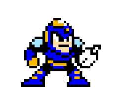
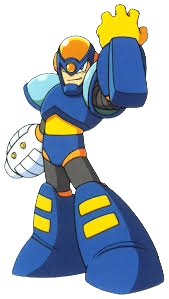

Next up is Flash Man, one of the four robot masters weak to Broken... err... Metal Blade. His stage is somewhat of a maze of slippery floors and flashing panels... and it is full of Sniper Joes and Crazy Cannons. The stage is tiny, lacking in variety, and overall quite boring. Music is kind of meh... definitely not one of the game's better stages. Just a small tip when it comes to Sniper Joe mechs... if you are in mid-air when they land from a jump, they will not shoot at you. You can use this to your advantage to give them the slip.
Development & Impact: Capcom was hesitant to create a sequel due to the first game's low sales, giving the team only 3-4 months to develop it. The game was developed in secret alongside other projects.Defining Features: It introduced the "EnergyTank," the password system, and the standard eight Robot Master format (previously six in Mega Man 1). The Robot Masters: The bosses were selected from over 8,370 fan submissions in Japan. These include Metal Man, Bubble Man, Heat Man, Wood Man, Air Man, Crash Man, Flash Man, and Quick Man.
Crash Man was built by Dr. Wily specifically for combat in his revenge against Mega Man using the designs of Bomb Man and Guts Man as a base, with high speed and agility, the use of high explosives as primary weapons, and clad in a thick armor that can effectively withstand explosions.